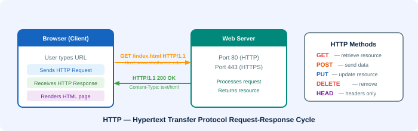

🔄 Hypertext Transfer Protocol (HTTP)
The request-response protocol that powers communication on the World Wide Web

What is HTTP?
HTTP is a request-response protocol — the browser sends a request, and the server sends back a response. The WWW uses HTTP to send information between clients and servers. Every time you load a web page, your browser is making HTTP requests behind the scenes.
HTTP stands for Hypertext Transfer Protocol.
The HTTP Request-Response Cycle
- Step 1: The user enters a URL in the browser (or clicks a link).
- Step 2: The browser sends an HTTP request to the server at that address.
- Step 3: The server processes the request and retrieves the resource.
- Step 4: The server sends back an HTTP response with the resource content.
- Step 5: The browser renders the received HTML, CSS, images, etc.
HTTP Request Methods
HTTP requests are always of a specific type. The most common are:
| Method | Purpose | Example Use |
|---|---|---|
| GET | Retrieve a resource | Loading a webpage |
| POST | Send data to server | Submitting a form |
| PUT | Update a resource | Editing a profile |
| DELETE | Remove a resource | Deleting a record |
| HEAD | Get headers only (no body) | Checking if a page exists |
| OPTIONS | Check allowed methods | CORS preflight requests |
HTTP vs HTTPS
🔒 HTTPS — HTTP Secure
HTTPS is the secure version of HTTP. It uses SSL/TLS encryption to protect data in transit between browser and server. HTTPS runs on port 443, while HTTP runs on port 80. Today, all reputable websites use HTTPS to protect user data and privacy. Browsers display a padlock icon for HTTPS sites.
HTTP Status Codes
- 200 OK — Request succeeded, resource returned
- 301 Moved Permanently — Resource has a new URL
- 404 Not Found — Resource does not exist on server
- 500 Internal Server Error — Server encountered an error
- 403 Forbidden — Access denied to the resource